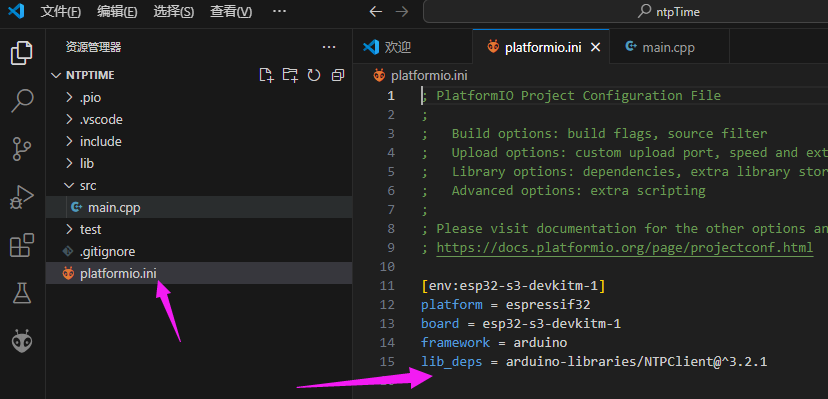
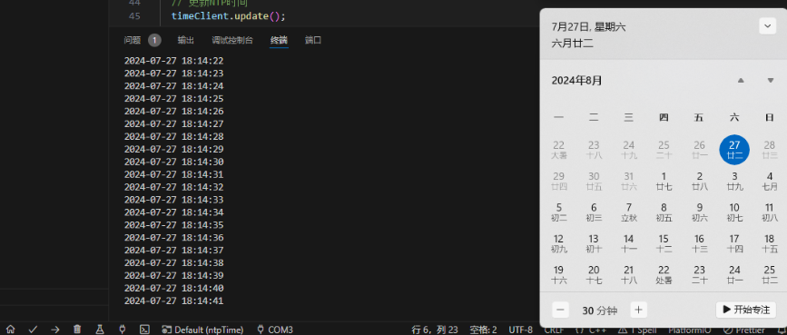

获取网络时间
Update history
| Date | Version | Author | Update content |
|---|---|---|---|
| 2024-12-05 | 1.0.1 | 老怪鸽 | 更新了基本文档 |
NTP介绍
NTP网络时间协议（Network Time Protocol，NTP），是一种用于在计算机网络上同步时间的协议。它通过在时间服务器和客户端之间交换时间信息来确保网络中的计算机时钟保持准确的时间同步。以下是NTP的一些关键特性：
特点
精确性： NTP能够提供非常高的时间同步精度，通常在毫秒级，甚至可以达到微秒级。
可扩展性： NTP设计用于在广泛的网络环境中工作，从局域网到广域网，可以支持大量客户端。
分层结构： NTP采用层级化的时间同步架构，时间信息从高精度的参考时钟源通过多个时间服务器层传递到客户端。
鲁棒性： NTP能够处理网络延迟、丢包和其他网络问题，确保时间同步的稳定性和可靠性。
应用
服务器同步： 确保服务器集群中的所有服务器时钟同步。
网络安全： 在网络安全中，同步的时钟对于日志记录和事件关联至关重要。
分布式系统： 在分布式系统和数据库中，准确的时间同步有助于维护数据一致性和协调操作。
NTP广泛应用于互联网上的各种设备和系统中，是现代网络基础设施的重要组成部分。
以上来自 chatGPT 的介绍
硬件准备
因为项目要有网络时间校准功能，要使用WIFI获取网络时间进行校准。这里使用的是ESP32S3的开发板。
购买地址：立创·ESP32S3R8N8 开发板

工程创建
在VSCode中打开PlatformIO扩展创建名为ntpTime的 Espressif ESP32-S3-DevKitM-1 工程。
关于详细图文创建工程的过程请参考👉RTC时钟驱动章节的工程创建小节。
安装驱动库
在驱动库安装界面，搜索NTPClient，安装来自Fabrice Weinberg 的 NTPClient库。
关于详细图文安装驱动库的过程请参考👉RTC时钟驱动章节的安装驱动库小节。
安装完成之后，打开platformio.ini文件，可以看到已经安装上了驱动库。

编辑代码
打开工程下的src文件夹下的main.cpp。
输入以下代码：
#include <Arduino.h>
#include <WiFi.h>
#include <NTPClient.h>
#include <WiFiUdp.h>
//设置你要ESP32S3连接的WIFI名称
#define WIFI_SSID "lckfb"
//设置你要ESP32S3连接的WIFI密码
#define WIFI_PASS "12345678"
// 定义NTP服务器
const char* ntpServer = "pool.ntp.org";
// 定义时区（以小时为单位，例如：+1或-3）
const long gmtOffset = 8;
// 定义夏令时（Daylight Saving Time，DST）的偏移量（通常为0或3600秒）
const int daylightOffset = 0;
// 创建UDP实例
WiFiUDP ntpUDP;
// 创建NTP客户端实例
NTPClient timeClient(ntpUDP, ntpServer, gmtOffset * 3600, daylightOffset * 3600);
void setup()
{
//初始化串口
Serial.begin(9600);
// 连接到Wi-Fi
WiFi.begin(WIFI_SSID, WIFI_PASS);
//如果没有连接上串口就一直输出 ...
//如果连接不上请确保你要连接的WIFI不是5G频段!
//大部分ESP32系列都只能连接2.4G频段!
while (WiFi.status() != WL_CONNECTED) {
delay(500);
Serial.print(".");
}
// 启动NTP客户端
timeClient.begin();
// 设置时间同步间隔（以毫秒为单位）
timeClient.setUpdateInterval(60000); // 1分钟更新一次
}
void loop() {
// 更新NTP时间
timeClient.update();
if (timeClient.getEpochTime() > 0)
{
// 获取成功
unsigned long epochTime = timeClient.getEpochTime();
struct tm *ptm = gmtime ((time_t *)&epochTime);
//年是至1900年后开始计算,所以我们实际使用得+1900
int year = ptm->tm_year + 1900;
//月是从0开始算,所以我们实际使用得+1
int month = ptm->tm_mon + 1;
int day = ptm->tm_mday;
int hour = ptm->tm_hour;
int minute = ptm->tm_min;
int second = ptm->tm_sec;
// 打印时间
Serial.printf("%d-%02d-%02d %02d:%02d:%02d\n", year, month, day, hour, minute, second);
} else {
// 获取失败，可以在这里进行重试或错误处理
Serial.println("Failed to get NTP time");
}
delay(1000); // 每1秒尝试一次
}
代码验证
代码编写完成之后，将ESP32S3开发板接入电脑下载代码，然后打开串口监视器查看现象。
下载步骤请参考👉RTC时钟驱动章节的代码验证小节。
实际获取网络时间的效果如下：

后续我们使用到硬件的RTC时钟模块时，就可以通过NTP的方式获取网络的时间进行校准了。
说明：如果你根据代码操作运行不起来，可以下载👉例程看看